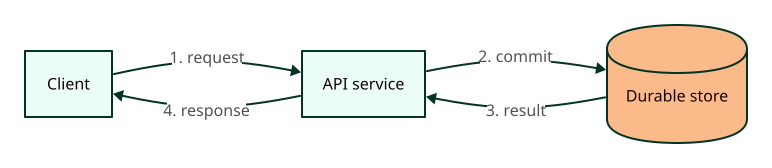
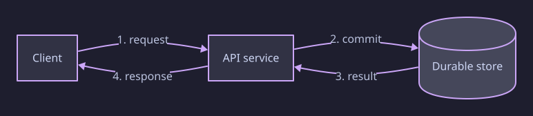

静态图构建样例Static diagram build example

查看原图（新标签页） ↗Open full image (new tab) ↗
查看原图（新标签页） ↗Open full image (new tab) ↗↔ 图宽时可左右滚动↔ Scroll horizontally when needed

查看原图（新标签页） ↗Open full image (new tab) ↗
查看原图（新标签页） ↗Open full image (new tab) ↗↔ 图宽时可左右滚动↔ Scroll horizontally when needed